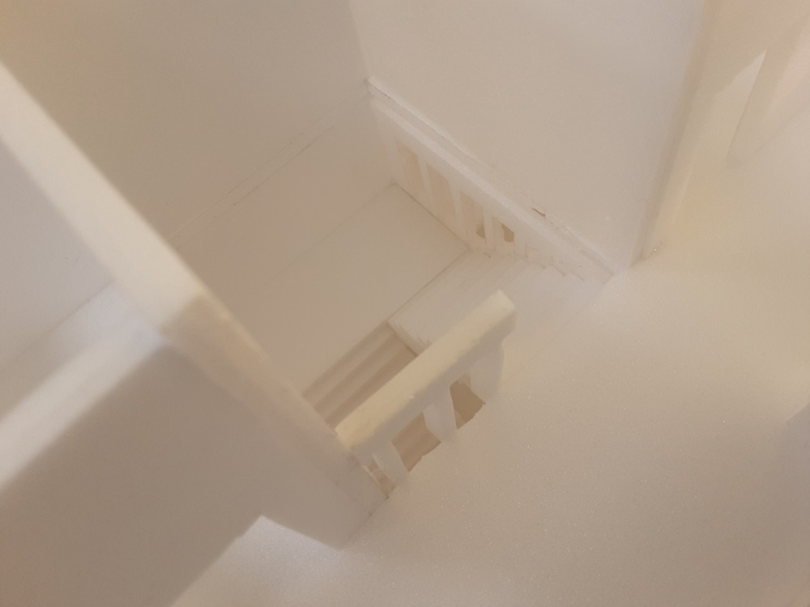
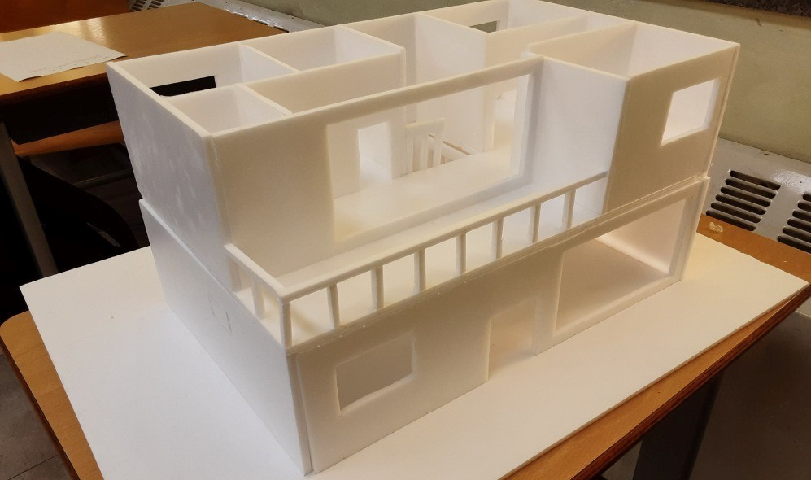
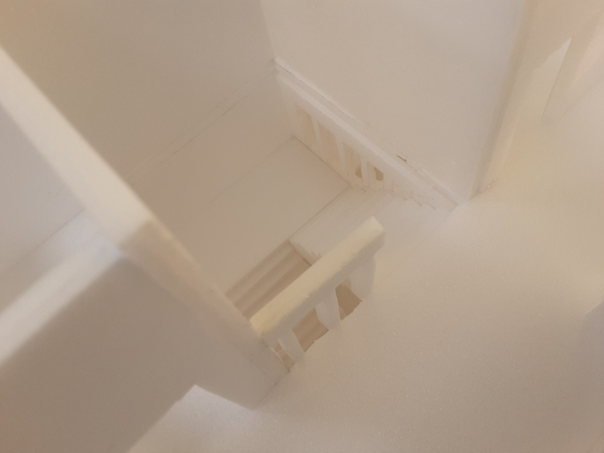
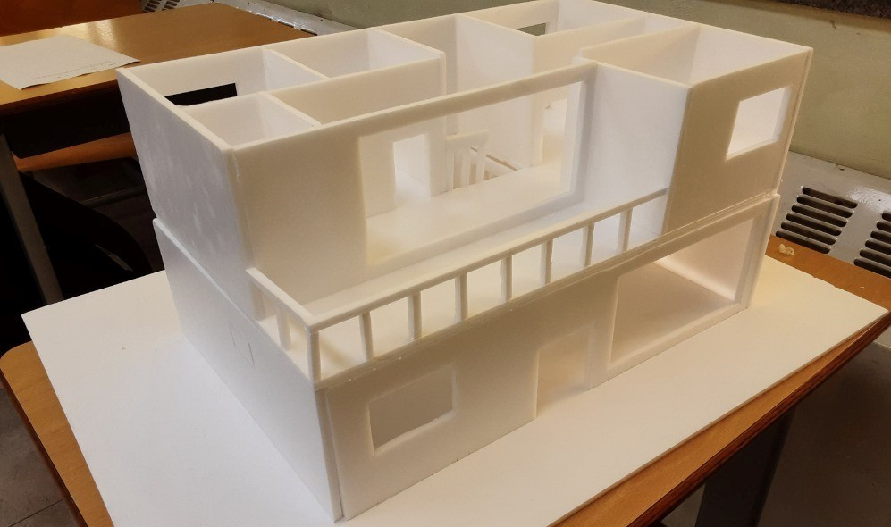

활동 목적
20609 김범주
2층 모형 주택을 직접 설계하고
제작하며 동선, 내부 구조, 편의를 고려하는 등 실제 건축가가 어떠한 일을 하고 어떠한 마음가짐과 생각을 가지고 작업하는지 알아보기 위함이다.
20610 김유찬
학급 프로젝트에서 건축물 만들기를 한 이유는 고등학교 1학년 때 꿈이 건축가였으나 그때는 이런 모의 건축물 만들기 같은 활동이 없어서 아쉬워 했는데 마침 2학년때 꿈이 건축가인 친구들이 있어서 같이 하게 되었습니다.
20616 임희원
2층 주택을 만들면서 직접 설계도를 만들어보고 실제로 집을 지었을 때 거주자가 최적의 동선으로 움직이게끔 제작하기 위함이다.
20619 조세영
모형 주택을 직접 설계하고, 직접 만들어서 건축을 더 알아가는 계기를 마련하기 위해서이다.
활동 과정
1층 설계도
2층 설계도
1. 설계하기
2. 만들기
1층
계단
완성작
느낀점
20609 김범주
2층 모형 주택을 직접 설계하고
제작하며 동선, 내부 구조, 편의를 고려하는 등 실제 건축가가 어떠한 일을 하고 어떠한 마음가짐과 생각을 가지고 작업하는지 알아보기 위함이다.
20610 김유찬
학급 프로젝트에서 건축물 만들기를 한 이유는 고등학교 1학년 때 꿈이 건축가였으나 그때는 이런 모의 건축물 만들기 같은 활동이 없어서 아쉬워 했는데 마침 2학년때 꿈이 건축가인 친구들이 있어서 같이 하게 되었습니다.
20616 임희원
2층 주택을 만들면서 직접 설계도를 만들어보고 실제로 집을 지었을 때 거주자가 최적의 동선으로 움직이게끔 제작하기 위함이다.
20619 조세영
모형 주택을 직접 설계하고, 직접 만들어서 건축을 더 알아가는 계기를 마련하기 위해서이다.
 




제작중인 모습

실험 목적
텐세그리티 구조를 직접 만들어보고
과학적인 원리에 대해 이해한다.
이론적 배경
텐세그리티(tensegrity)란, tesional integrity의 축약어로, 인장력과 압축력이 평형을 이루어 긴장된 구조이다. 텐트도 텐세그리티 구조라고 볼 수 있다.
건축구조로 이용될 경우 경제성이 좋고 지진이나 진동에 잘 대응한다는 장점이 있다.
텐세그리티 구조는 인장재와 압축재에 가해지는 인장력과 압력이 서로 균형을 이루며 안정적인 형태를 유지하기 때문에, 외부 충격을 흡수함에도 튼튼하며 구조 손상 없이도 무척 큰 변형을 할 수 있다. 즉, 충격 흡수율, 부피 대비 감도, 구조 유연성 등이 무척 높은 특성을 보인다.
이로 인해 인체나 동물의 골격 구조를 모사하는 로봇을 제작하는 데도 활용될 수 있고, 예측이 어려운 환경에서 다양한 충격에도 안정적으로 동작할 수 있는 로봇을 제작하는데도 활용되어 왔다.
실험 과정
1. 아이스크림 막대를 세 개씩 위와 같이 붙인다.
2. 반으로 비스듬하게 자른 아이스크림 막대를
(1)에서 만든 막대에 세워 붙이고,
위와 같이 실로 연결한다.
텐세그리티 완성
손으로 강하게 힘을 주거나 무거운 물체를 올려놓아도 안정적인 형태를 유지한다.
느낀점
20602 이세빈
하나의 프로젝트를 관심사를 반영한 주제 선정부터
보고서 작성까지 직접 기획하여 진행하면서 성취감을
느꼈다. 간단한 실험이라도 모든 단계를 스스로 생각해
보고 진행하는 데에는 많은 노력이 필요함을 알게 되었다.
20607 김동욱
팀원과 같이 프로젝트를 완성하여
협동심을 배웠다. 역학을 이용한
구조물을 만들어 기계 설계사라는
꿈에 한발 더 다가갔다.
실험 모습